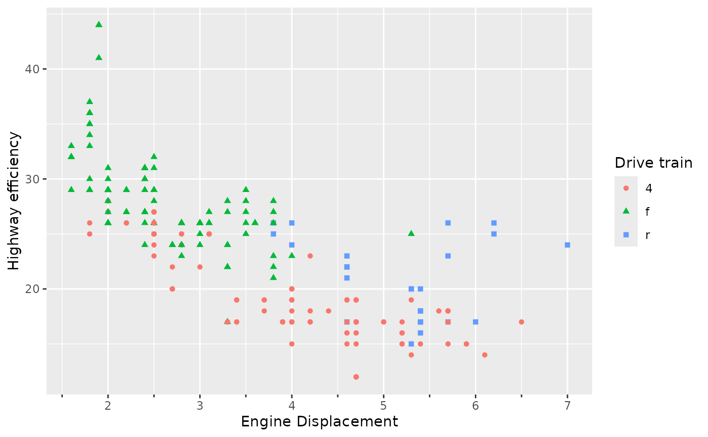
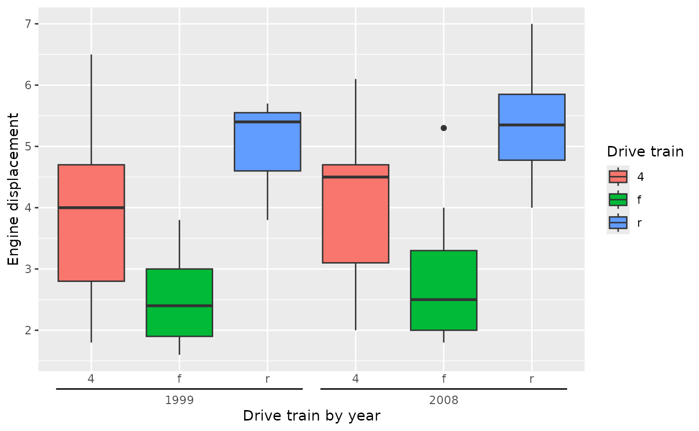

Rather than information that is key, this article will discuss information about keys.
Keys in vanilla ggplot2
The way guides exchange information with scales is through so called
‘keys’. Keys are simply data frames that typically hold information
about the aesthetic, what values they represent and how these should be
displayed. You may have already seen keys if you’ve used the
get_guide_data() function before, as it can be used to
retrieved a guide’s key. In the data frame below, we can see a key for
the ‘x’ aesthetic. It tells us the relative location of tick marks in
the aesthetic’s x column, and the numerical values they
represent in the .value column. How the values should be
communicated to users is captured in the .label column.
Sometimes, keys have information about additional aesthetics, like the
y column in the key below.
standard <- ggplot(mpg, aes(displ, hwy)) +
geom_point(aes(shape = drv, colour = drv)) +
labs(
shape = "Drive train",
colour = "Drive train",
y = "Highway efficiency",
x = "Engine Displacement"
)
get_guide_data(standard, aesthetic = "x")
#> x .value .label y
#> 1 0.1127946 2 2 0
#> 2 0.2811448 3 3 0
#> 3 0.4494949 4 4 0
#> 4 0.6178451 5 5 0
#> 5 0.7861953 6 6 0
#> 6 0.9545455 7 7 0Keys in gguidance
The key difference between keys in gguidance and keys in ggplot2, is that gguidance exposes users to keys. At first, this can be an inconvenience, but it allows for a greater degree of customisation.
Why use keys?
Before we dig into the different types of keys, it is worth noting exactly why keys have been exposed. Keys represent ‘rules’ about how to annotate a scale, whereas the guide is the display of that rule.
For example, key_log() instructs to annotate every 10x
change with large ticks, and in between changes with smaller ticks. It
doesn’t really matter whether this rule is applied on an axis or a
colour bar. Having the rule independent of the display makes it more
modular.
logkey <- key_log()
ggplot(msleep, aes(sleep_total, brainwt, colour = bodywt)) +
geom_point(na.rm = TRUE) +
scale_y_log10(guide = guide_axis_base(key = logkey)) +
scale_colour_viridis_c(
trans = "log10",
guide = guide_colbar(key = logkey)
)Regular keys
The understand better how a typical key works, we can use
key_manual() to manually create a key. Usually it is
sufficient to just provide the aesthetic argument, as the
.value and .label columns automatically derive
from that.
key_manual(aesthetic = c(2, 4, 6))
#> aesthetic .value .label
#> 1 2 2 2
#> 2 4 4 4
#> 3 6 6 6If you want custom labels, you can set the label
argument. Most guides in gguidance accept a key argument,
which will cause the guide to display the information in the key, rather
than the information automatically derived from the scale.
my_key <- key_manual(aesthetic = c(2, 4, 6), label = c("two", "four", "six"))
standard + guides(x = guide_axis_base(key = my_key))
In addition, you can provide some automatic keys as keywords. Setting
key = "minor", is the same as setting
key = key_minor(). In the same fashion many other
key_*() functions can be used as keyword by omitting the
key_-prefix.
standard + guides(x = guide_axis_base(key = "minor"))
Some keys don’t directly return data frames, but return instructions
on how these keys should interact with scales. For example
key_auto(), the default key for many guides in gguidance,
needs to know the range in which to populate tickmarks.
key <- key_auto()
print(key)
#> function (scale, aesthetic = NULL)
#> {
#> aesthetic <- aesthetic %||% scale$aesthetics[1]
#> df <- Guide$extract_key(scale, aesthetic)
#> df <- data_frame0(df, !!!label_args(...))
#> class(df) <- c("key_standard", "key_guide", class(df))
#> df
#> }
#> <bytecode: 0x55b42287c4b8>
#> <environment: 0x55b42287f280>We can preview what values they’d label by letting the key absorb a scale with known limits.
template <- scale_y_log10(limits = c(1, 1000))
key(template, "y")
#> y .value .label
#> 1 0 0 1
#> 2 1 1 10
#> 3 2 2 100
#> 4 3 3 1000Ranged keys
A special type of guide you may find in gguidance are so called ‘ranged’ guides. The only difference with regular guides is that they do not mark a single point for an aesthetic, but rather use a start- and end-point to mark a range of the aesthetic. This can be convenient to annotate co-occurrances between the data you are plotting and other events. For example, we can annotate the airtimes of TV shows in timeseries data.
ranges <- key_range_manual(
start = as.Date(c("1985-09-14", "1993-09-16")),
end = as.Date(c("1992-05-09", "2004-05-13")),
name = c("Golden Girls", "Frasier"),
level = 1:2
)
ranges
#> start end .label .level
#> 1 1985-09-14 1992-05-09 Golden Girls 1
#> 2 1993-09-16 2004-05-13 Frasier 2Compared to a regular key, we don’t have an aesthetic
column, which is replaced by the start and end
columns. In these cases, we cannot indicate a single
.value, but we can still use the .label
column. The .level column indicates how far we have to
offset a range, so we’ll display “Frasier” farther away than “Golden
Girls”.
ggplot(economics, aes(date, unemploy)) +
geom_line() +
guides(x.sec = primitive_bracket(ranges))
There is also an ‘automatic’ ranged key, which attempts to find patterns in the key labels.
plot <- ggplot(mpg, aes(interaction(drv, year), displ, fill = drv)) +
geom_boxplot() +
labs(
x = "Drive train by year",
y = "Engine displacement",
fill = "Drive train"
)
plotFor example an obvious pattern in the x-axis labels of the plot above
is that you first have 3 entries for the 3 drive trains in 1999,
followed by 3 drive trains in 2008. By default,
key_range_auto() tries to split the label on any
non-alphanumeric character, but you give explicit split instructions by
using the sep argument.
# Split on literal periods
key <- key_range_auto(sep = "\\.")
plot + guides(x = primitive_bracket(key = key))
Futher gimmicks
Piping keys
The key_manual() and key_range_manual()
functions have equivalents that are easy to pipe. They are called
key_map() and key_range_map() respectively,
and they can replace doing the following:
key <- key_range_manual(
start = presidential$start,
end = presidential$end,
name = presidential$name
)By the following, more pipe-friendly version:
key <- presidential |>
key_range_map(
start = start,
end = end,
name = name
)Both of these keys would display as something like this:
ggplot(economics, aes(date, unemploy)) +
geom_line() +
guides(x.sec = primitive_bracket(key))
Formatting keys
In addition to having a lot of control over what the keys display,
you also have control over common text formatting operations in keys.
Most key options have an ... argument that allows many
arguments to element_text() to be passed on to the
labels.
ggplot(mpg, aes(displ, hwy)) +
geom_point() +
guides(x = guide_axis_base(key = key_auto(colour = "red", face = "bold")))In some cases where you know the label in advance, which is almost
every time one uses key_manual(), key_map() or
their ranged equivalents, you can even vectorise these formatting
options.
guide <- presidential |>
key_range_map(
start = start,
end = end,
name = name,
colour = ifelse(party == "Republican", "tomato", "dodgerblue"),
face = "bold"
) |>
primitive_bracket()
ggplot(economics, aes(date, unemploy)) +
geom_line() +
guides(x.sec = guide)Forbidden keys
There are, at the time of writing, two keys that you probably
shouldn’t use in your code. These are key_sequence() and
key_bins(). The hope is that mentioning their use here will
prevent experimenting and subsequent frustration with these keys. You
can see that key_sequence() does not produce an informative
axis.
my_sequence_key <- key_sequence(n = 20)
standard +
guides(x = guide_axis_base(key = my_sequence_key))The reason for this is that this key was designed for colour gradients
ggplot(mpg, aes(displ, hwy, colour = cty)) +
geom_point() +
scale_colour_viridis_c(
guide = gizmo_barcap(key = my_sequence_key)
)Likewise, key_bins() was not designed for regular
guides, but is specific to colour steps.
my_bins_key <- key_bins()
ggplot(mpg, aes(displ, hwy, colour = cty)) +
geom_point() +
scale_colour_viridis_c(
guide = gizmo_stepcap(key = my_bins_key)
)